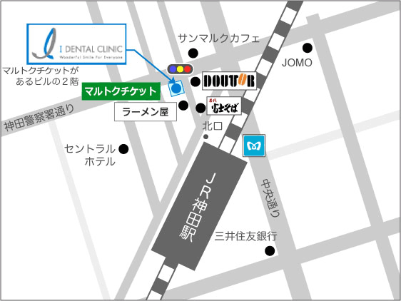

JRをご利用の患者様 北口を出てすぐ右手正面に「富士そば」さんが目に入ると思いますので、その通りを真っすぐにお進みください。２０ｍ程進むと左側にラーメン屋さんが見えてきます。 更に20m程進むと信号にぶつかりますが、信号の手前右手にドトールさん、左手にマルトクチケットさんがあり、マルトクチケットさんが入っている白いビルの2階が受付になります。 ・地下鉄（銀座線）ご利用の患者様 銀座線日本橋方面の1番前の車両に乗って下さい。改札を出て1番出口に出て下さい。 JRの改札と直結しておりますので、北口に出て下さい。 あとはJRと同じよう、青いロゴマークの入った旗を目印にご来院ください。
【このウィンドウを閉じる】